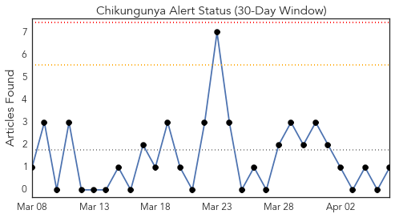
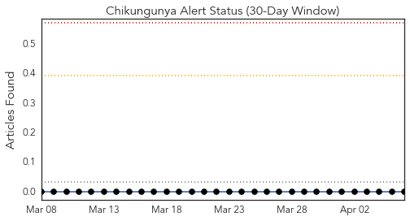
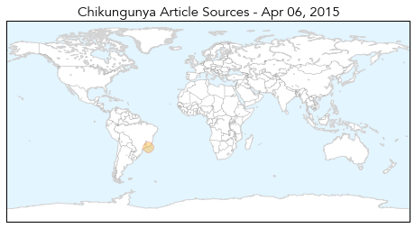
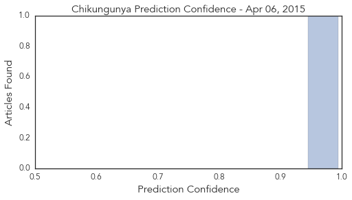

Measles
30-Day Web Trend
0 alerts, 0 warnings

30-Day Twitter Trend
4 alerts, 0 warnings

Article Locations

Article Confidences

Top Articles:
- 0.882
- Measles outbreak prompts hundreds on Peninsula to take their best shot -- Port Angeles Port Townsend Sequim Forks Jefferson County Clallam County Olympic Peninsula Daily NEWS
- 0.862
- State Health Department helps protect the public
- 0.862
- WHO helps North Korea battle measles outbreak
- 0.564
- WHO targets about 35, 000 children for vaccination
Top Tweets:
-
No tweets found for Apr 06, 2015
Chikungunya
30-Day Web Trend
0 alerts, 0 warnings

30-Day Twitter Trend
0 alerts, 0 warnings

Article Locations
Article Confidences
Top Articles:
Top Tweets:
-
No tweets found for Apr 06, 2015